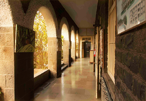
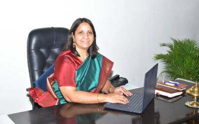
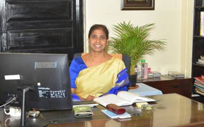
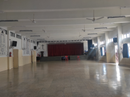
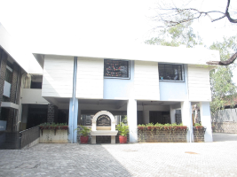

St. Mary’s has several major strengths: a solid academic programme, a child-centred approach and an unbeatable ambience. Christian principles form its foundation and it is registered as a Minority School. However admissions are open to children of all communities.
Our campus
St. Mary’s School is a day school located in serene, verdant surroundings spread over an impressive campus in the Cantonment area of Pune. Under its banner, it has separate sections for Girls’, Boys’ and a Co-ed Junior College. The school was originally started as an all-girls’ school. All three sections are located within the same campus.
Mission statement
Our mission at St. Mary’s is to nurture children — to make them enlightened, educated individuals who are fearlessly articulate, caring and humane; who can seize every opportunity to learn, seeking to serve not just the community but the nation and the world.
We wish to foster global citizens by committing ourselves to academics and inclusive development; constantly providing opportunities irrespective of differences and abilities; developing thinking skills by inculcating creativity, enquiry and introspection; and bringing out the best in every child.
Ethos
St. Mary’s is a combination of academic excellence and traditional values of discipline, respect, good behaviour and tolerance. We believe in inculcating a liberal mindset towards society and invoking a sense of responsibility to make the right choices.


From the Principal’s study
A letter to the community
“Commit to the Lord whatever you do, and he will establish your plans.”
It is with immense joy and pride that I extend my heartfelt greetings to each one of you. In June 2023 I embarked on this new journey as principal of St Mary’s School, with a commitment to fostering a nurturing and inspiring educational environment for our students.
This academic year, we have witnessed tremendous growth and achievement in both academic and extracurricular pursuits. A big feather in our cap is the India No. 1 School Rank in the category ‘Vintage Legacy Girls’ Day School’ by Education World at the India School Ranking Awards. Our commitment to providing a nurturing and inclusive learning environment remains steadfast.
Our students have demonstrated resilience, creativity, and a thirst for knowledge that continues to inspire us all. The tireless efforts of our dedicated teachers have played a pivotal role in shaping the minds of our students.
As I reflect on the journey I have embarked upon, I am filled with gratitude for the unwavering support given to me by our students, parents, faculty, and staff. Communication is key, and my door is always open. God bless you all.
Caroline Diane Ross · Principal
The leadership
Executive Director and Principal
As we begin a new academic year, we welcome you all and wish you a successful and fulfilling year ahead. There is some important news to share with you all.
Mrs Sujata Mallic Kumar, Executive Director
Mrs Sujata Mallic Kumar, who has led the transformation of the school in multiple ways for the last thirteen years and taken it to great heights, has now become the Executive Director of the School. In her new role, she will spearhead strategic planning for the future of the School, while continuing to guide and mentor her successor.
Mrs Caroline Diane Ross, Principal
Mrs Caroline Diane Ross, M.Com, B.Ed, has been in the field of education for over twenty-two years, of which five have been in a leadership position. She is dynamic, talented and accomplished, and is a speaker on varied topics of education at national and international platforms.

From the files
Landmark events
- 1866
The School is founded. Archbishop Leigh-Lye issues a circular to the residents of Poona stating that “a day school for girls is desired to fulfill the same purpose as the Bishop School for boys.” An appeal for Rs. 500 is made, and a headmistress, Mrs Woods, is engaged.
- 1872
The name of the School is officially changed from the Bishop’s School for Girls to St. Mary’s School.
- 1878
The School is handed over to the Sisters of the Community of St. Mary the Virgin, who had come from England the year before. From 1878 to 1977 the School was run by the Sisters, and its history was one of continuous progress and growth.
- 1895
The foundation stone of St. Lucy’s dorm is laid.
- 1924
A special holiday is given to mark the fact that numbers had reached 250.
- 1926
The Preparatory School is built. Sister Doreen was the Superior.
- 1953
President Rajendra Prasad visits the School.
- 1966
Sister Mary Frideswide presides over the Centenary Celebrations. “She Stoops to Conquer” is staged. The Nursery Building and the Cookery Block are inaugurated.
- 1977
The end of an era. Sister Mary Frideswide was the last Sister Superior and Sister Christine Yeshoda the last Sister Principal. Mrs Elizabeth Matthew takes over as Principal.
- 1984
Inauguration of the new Auditorium by Municipal Commissioner K.S. Siddhu.
- 1988
The swimming pool is inaugurated by the Rt. Rev. I.P. Andrews, Bishop of the Diocese.
- 1991
125th Anniversary Celebrations. Sister Mary Frideswide is the Guest of Honour.
- 1992
A new section for boys is started in St. Lucy’s Building. Mrs Matthew opened one division of each class, from Upper Kindergarten to Class X.
- 1998
The new Boys’ School Building becomes functional.
- 2000
The Boarding section is closed down and the Day School is expanded.
- 2009
The Junior College is established under the leadership of Mrs Veena Thadani.
- 2011
Mrs Sujata Mallic Kumar is appointed Principal of the School.
- 2016
The Sesquicentennial celebrations — a watershed moment. All stakeholders participated in the yearlong activities with great enthusiasm.
- 2023
Mrs Sujata Mallic Kumar is appointed Executive Director. Mrs Caroline Diane Ross takes over as Principal.
- 2026
One hundred and sixty years after the circular to Poona, the school is still on General Bhagat Marg.


